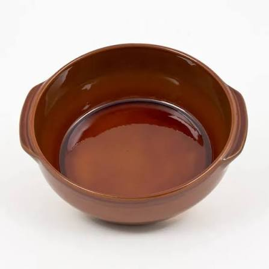

Toupins
d'Issel


⟹ Artisanat & Savoir-faire ⟸
Issel, village du Lauragais audois situé au nord de Castelnaudary, est intimement associé à l'histoire de la poterie culinaire. Son territoire possède des terres particulièrement adaptées à la fabrication de récipients capables d'aller au feu. La mémoire de cette activité est encore inscrite dans le village : les noms des rues des Potiers et des Fours rappellent une industrie qui fit la renommée d'Issel pendant plusieurs siècles, tandis que d'anciennes zones d'extraction de terre rouge subsistent dans les environs.
La tradition locale fait remonter l'organisation de cette activité à 1377. Cette année-là, sous les auspices de Guillaume de Plane, seigneur d'Issel, un potier d'origine italienne nommé Jean Gabalda s'installe dans le village et y établit un atelier. Les premières productions mentionnées sont avant tout des objets ménagers : réchauds, passoires, marmites et surtout des oules, pots à cuire destinés à mijoter ou bouillir près du foyer.

Le vocabulaire lui-même conserve la mémoire de ces usages. L'oule, issue de la grande famille des pots de cuisson, appartient au monde de la cuisine au feu de bois. Le toupin désigne lui aussi un pot de terre destiné aux préparations lentes. Quant à la cassole — de l'occitan caçòla — elle prend la forme d'une grande terrine ou grésale, généralement tronconique et évasée. Le dictionnaire languedocien de Boissier de Sauvages, publié en 1785, emploie le terme cassolo pour désigner une grande terrine en terre cuite.
La réussite des potiers d'Issel repose d'abord sur la géologie. Les terres argilo-calcaires communes du Lauragais peuvent devenir fragiles lorsqu'elles subissent des variations brutales de température. Les artisans apprirent donc à les associer à des argiles réfractaires non calcaires, silico-alumineuses, disponibles notamment à Issel, Saint-Papoul et dans le secteur de Revel. Ce mélange améliore le comportement de la poterie face au feu et aux chocs thermiques. La cassole n'est donc pas seulement une forme : elle est le résultat d'une véritable connaissance empirique des terres.
Sa forme répond elle aussi à la cuisson. La terre cuite conduit la chaleur moins brutalement que le métal et favorise une montée en température progressive. Les parois de la cassole permettent une cuisson longue et relativement homogène, particulièrement adaptée aux ragoûts. L'intérieur est traditionnellement vernissé afin de limiter la porosité, tandis que la forme évasée offre une large surface au plat. Cette alliance entre matière, forme et cuisson explique la longévité de l'ustensile.
C'est dans ce récipient que s'établit le lien devenu indissociable entre Issel et le cassoulet de Castelnaudary. Avant l'arrivée du haricot américain, les populations médiévales consommaient déjà des ragoûts de fèves, de viandes et d'herbes. La tradition du cassoulet s'est construite progressivement à partir de ces préparations anciennes. À la fin du Moyen Âge et au début de l'époque moderne, la cassole devient le récipient emblématique de ce type de cuisson ; avec le temps, son nom finit par passer du contenant au contenu : de la cassole naît le mot cassoulet.
Il convient de distinguer ici l'histoire documentée de la légende. Le récit selon lequel les habitants de Castelnaudary auraient préparé un immense ragoût pendant un siège de la guerre de Cent Ans appartient à la tradition populaire et contribue au folklore du plat, mais il ne constitue pas une preuve historique de sa naissance. De même, l'introduction du haricot dans les cuisines européennes fut un processus progressif après les échanges avec les Amériques. Ce qui est solidement ancré dans l'histoire locale, en revanche, est l'ancienneté de la poterie d'Issel et son rôle dans la fabrication de la cassole.
« Salut, poterie lauragaise, tu auras cinq cents ans l'an prochain »
— Auguste Fourès, Le Cant des poutiès, 1876Au XIXe siècle, la poterie connaît à Issel un véritable âge industriel à l'échelle villageoise. Les sources communales indiquent que, vers le milieu du siècle, cette activité employait environ 72 personnes. Les ateliers ne produisaient pas seulement des cassoles : la poterie commune répondait à une multitude de besoins domestiques et agricoles. Les pièces du Lauragais étaient appréciées pour leurs glaçures aux tons jaunes, bruns, verts ou bleus, tandis que les fours, grands consommateurs de bois, rythmaient l'activité du village.
Cette importance explique l'hommage rendu en 1876 par le poète occitan Auguste Fourès dans Le Cant des poutiès. En saluant une poterie lauragaise proche de ses cinq siècles d'existence, le texte témoigne de la place prise par le métier de potier dans l'identité régionale. La poterie n'est alors pas seulement une production économique : elle fait partie du paysage social du Lauragais, de sa langue et de sa culture populaire.
Comme beaucoup d'artisanats ruraux, l'activité décline ensuite avec l'industrialisation de la vaisselle, les nouveaux matériaux de cuisine et les transformations des modes de chauffage. Selon l'histoire communale d'Issel, le dernier potier du village cesse son activité peu avant la Seconde Guerre mondiale. Les fours s'éteignent, mais la réputation de la terre d'Issel et de la cassole survit grâce au cassoulet et aux potiers des environs.
La continuité la plus célèbre se trouve aujourd'hui à Mas-Saintes-Puelles, près de Castelnaudary, avec la Poterie Not. L'atelier trouve son origine au début du XIXe siècle avec la famille Perrutel ; Émile Not s'associe à François Gleizes en 1947 avant que les générations suivantes ne poursuivent l'activité. La famille Not continue de tourner à la main les cassoles et d'autres poteries culinaires, décoratives ou de jardin, en conservant des méthodes traditionnelles et un ancien four à bois.
Cette poterie est aujourd'hui reconnue comme Entreprise du Patrimoine Vivant. Aude Tourisme la présente comme l'unique lieu de France où la cassole traditionnelle est encore tournée à la main sur des tours de potiers datant de 1830. Le tournage, le séchage, l'engobage, l'émaillage par trempage ou à la louche et la cuisson perpétuent un ensemble de gestes dont les racines plongent dans plusieurs siècles de pratique lauragaise.
Ainsi, le toupin et la cassole racontent bien davantage qu'une histoire d'ustensiles de cuisine. Ils relient la géologie du Lauragais, l'exploitation de l'argile, les techniques du feu, l'économie villageoise, la langue occitane et l'histoire alimentaire de Castelnaudary. À Issel, la terre a façonné à la fois un objet et une identité : sans les potiers et leurs récipients résistants au feu, le cassoulet n'aurait probablement pas acquis la forme matérielle — ni même le nom — sous lesquels il est aujourd'hui connu.
Pour comprendre l'importance d'Issel, il faut replacer le village dans le vaste pays potier du Lauragais. Entre Castelnaudary, Saint-Papoul, Issel, Revel et les villages voisins, les artisans disposaient de gisements d'argile de qualités différentes. Les terres pouvaient être mélangées afin d'obtenir une pâte suffisamment plastique pour le tournage mais surtout assez résistante aux variations de température pour produire de la poterie culinaire.
Cette spécialisation est fondamentale : toutes les argiles ne conviennent pas aux récipients allant directement au feu. Une terre trop calcaire ou mal préparée peut se fissurer sous l'effet du choc thermique. Les potiers du Lauragais ont donc développé une connaissance empirique très fine des gisements, des proportions de mélange, du séchage et de la cuisson. Ce savoir n'était pas théorique : il se transmettait dans l'atelier, par l'observation et la répétition des gestes.
La mention traditionnelle de Jean Gabalda en 1377, potier d'origine italienne installé à Issel, constitue un repère majeur de l'histoire locale. Elle témoigne en tout cas de l'ancienneté exceptionnelle de l'activité potière organisée dans le village. Au fil des générations, les ateliers produisent une gamme bien plus vaste que la seule cassole : oules, marmites, cruches, terrines, passoires, réchauds et autres récipients nécessaires à une société où la terre cuite occupe une place quotidienne.
Le toupin appartient à cet univers de la cuisine au foyer. Sa fonction est inséparable des anciennes manières de cuire : marmites suspendues, pots placés près des braises, plats laissés longuement dans la chaleur décroissante d'un four. La terre cuite accumule puis restitue progressivement la chaleur. Elle convient donc particulièrement aux soupes, légumes secs, viandes mijotées et préparations qui demandent une cuisson lente.
La cassole représente l'une des formes les plus emblématiques issues de cette culture matérielle. Sa silhouette évasée n'est pas seulement esthétique : elle favorise l'évaporation et offre une large surface supérieure. Sa glaçure intérieure limite la pénétration des liquides dans la terre poreuse et facilite l'entretien. Le récipient devient ainsi indissociable du cassoulet, dont la cuisson longue exige précisément inertie thermique et résistance au feu.
Le lien linguistique est lui aussi révélateur. Dans le domaine occitan, les mots désignant pots, oules, toupins et cassoles appartiennent à un vocabulaire ancien de la cuisine et de la poterie. Le terme cassoulet est traditionnellement rapproché de cassole : le nom du récipient finit par identifier la préparation qui y cuit. Cette relation entre objet et recette illustre à quel point l'histoire gastronomique ne peut être séparée de celle des artisans qui fabriquaient les ustensiles.
La production exigeait une organisation saisonnière et collective. Il fallait extraire la terre, la laisser se préparer, la débarrasser de ses impuretés, la pétrir, façonner les pièces, assurer un séchage suffisamment lent puis remplir le four. La cuisson constituait l'étape la plus risquée : une mauvaise montée en température, un enfournement défectueux ou une variation trop brutale pouvait compromettre plusieurs jours de travail.
Les fours de potiers consommaient aussi d'importantes quantités de bois. Leur présence influençait donc l'économie locale bien au-delà de l'atelier : extraction de l'argile, approvisionnement en combustible, transport, vente sur les marchés et circulation des pièces mobilisaient plusieurs activités. Les toponymes et noms de rues liés aux potiers et aux fours sont les vestiges urbains de cet ancien système productif.
Au XIXe siècle, alors que la production atteint une importance considérable à Issel, la concurrence des objets manufacturés commence progressivement à modifier le marché. Métal émaillé, fonte, puis aluminium et autres matériaux offrent de nouveaux ustensiles. Les réseaux ferroviaires facilitent aussi l'arrivée de vaisselle industrielle bon marché. Comme dans de nombreux villages potiers français, les ateliers familiaux doivent affronter une concurrence impossible à soutenir uniquement par les méthodes anciennes.
La disparition du dernier potier d'Issel avant la Seconde Guerre mondiale ne signifie cependant pas la disparition du savoir-faire lauragais. La production se maintient dans les environs et la demande de cassoles demeure portée par la renommée croissante du cassoulet de Castelnaudary. Le récipient traditionnel devient progressivement un objet patrimonial autant qu'un ustensile de cuisine.
La survivance contemporaine de ce savoir-faire est particulièrement remarquable parce que le tournage manuel conserve les petites variations propres au geste artisanal. Épaisseur des parois, ouverture, courbe du fond et régularité du séchage sont ajustées par le potier. L'engobe et la glaçure donnent ensuite aux pièces leur aspect caractéristique, tandis que la cuisson transforme définitivement une terre meuble en objet durable.
Les toupins d'Issel constituent ainsi un exemple rare où géologie, artisanat et gastronomie sont étroitement liés. La nature du sous-sol a rendu possible une poterie résistante ; les potiers ont perfectionné les mélanges et les formes ; les usages culinaires ont donné à ces récipients une fonction précise ; enfin le cassoulet a assuré à la cassole une notoriété qui dépasse largement le Lauragais. Derrière un simple pot de terre se trouve donc l'histoire complète d'un territoire et de ses métiers.
Castelnaudary : capitale du cassoulet, à 8 km d'Issel, et siège de la Grande Confrérie du Cassoulet.
Canal du Midi : l'écluse de la Méditerranée et ses abords bucoliques, tout proches des ateliers.
Mas-Saintes-Puelles : village où la tradition potière se perpétue de génération en génération.
Saint-Papoul : abbaye et village voisin, également terre d'argile réfractaire historique.